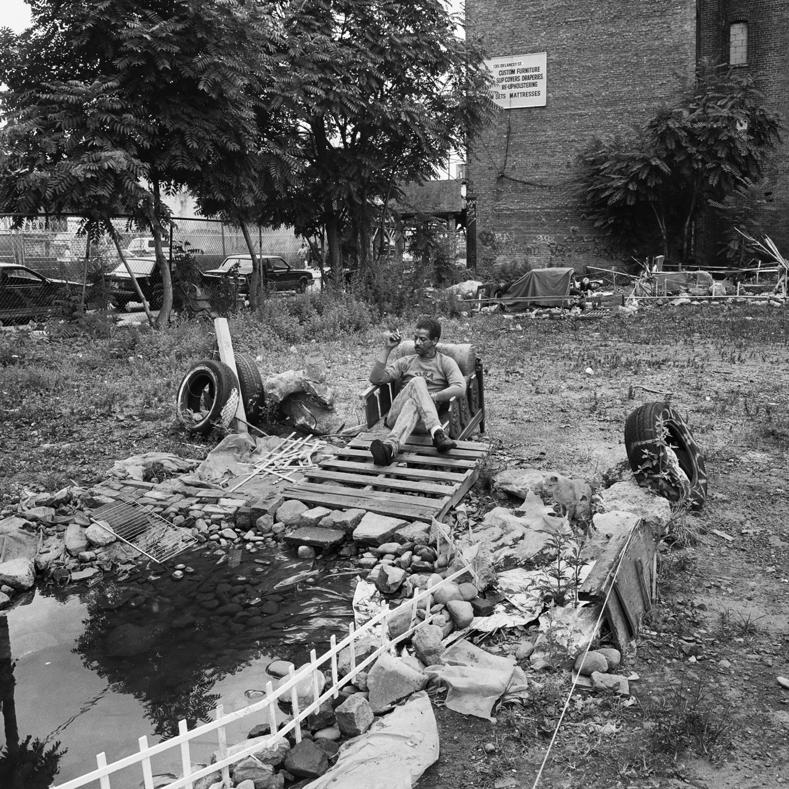
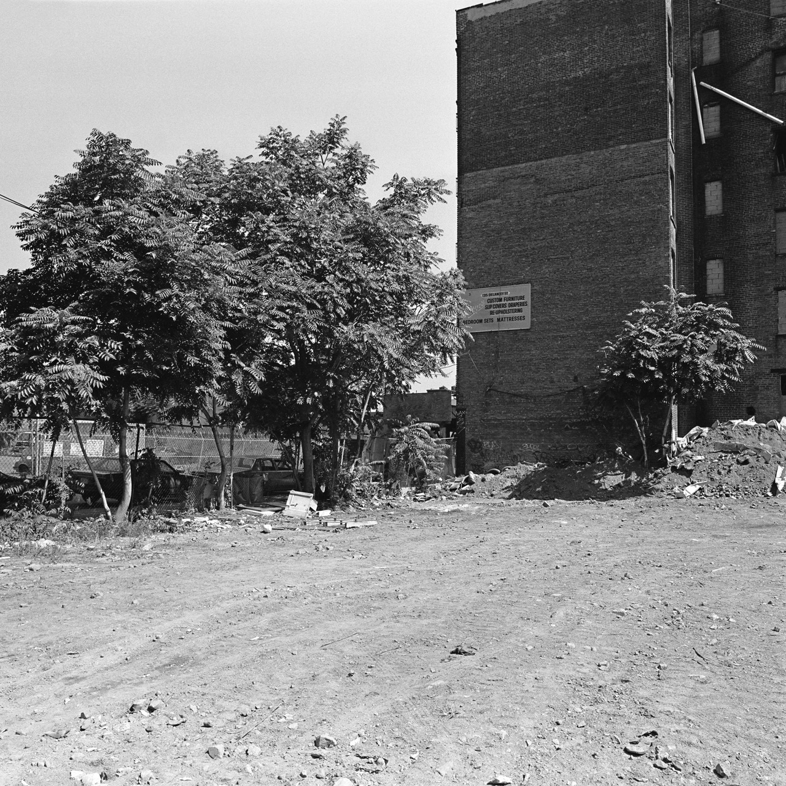
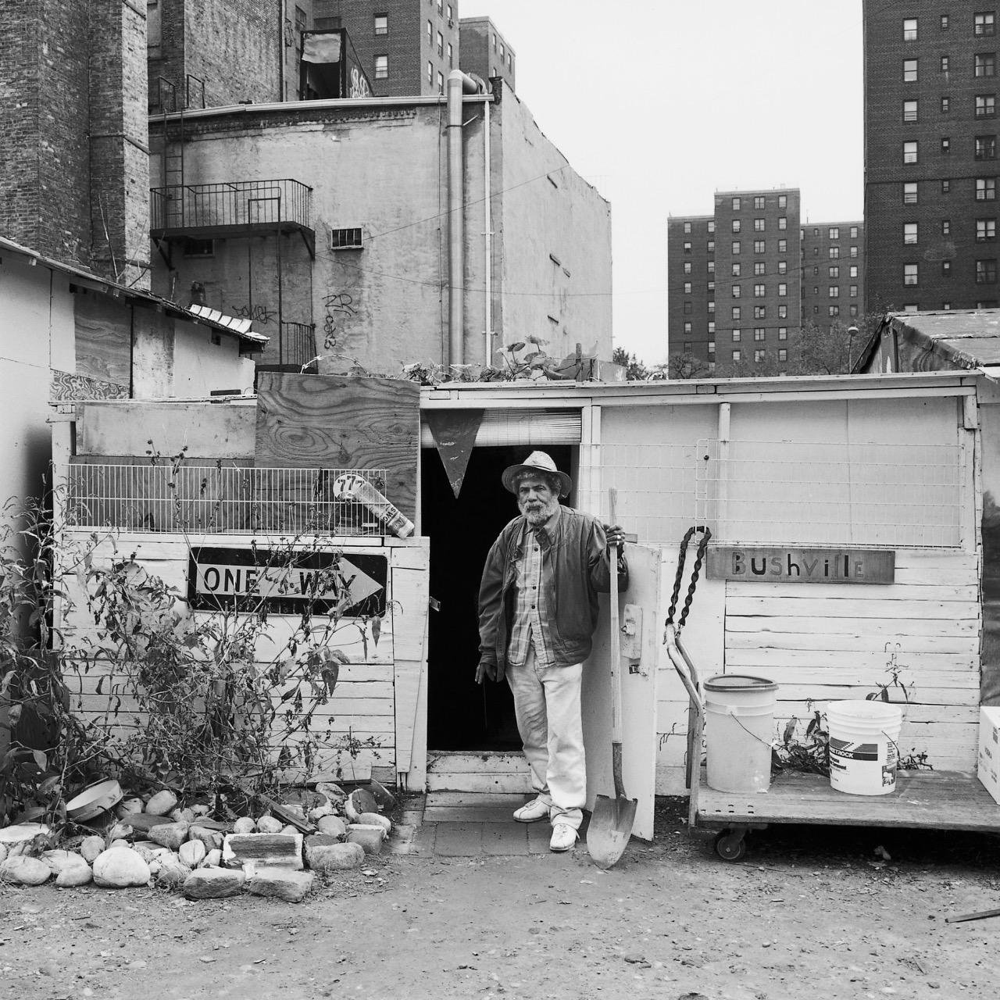
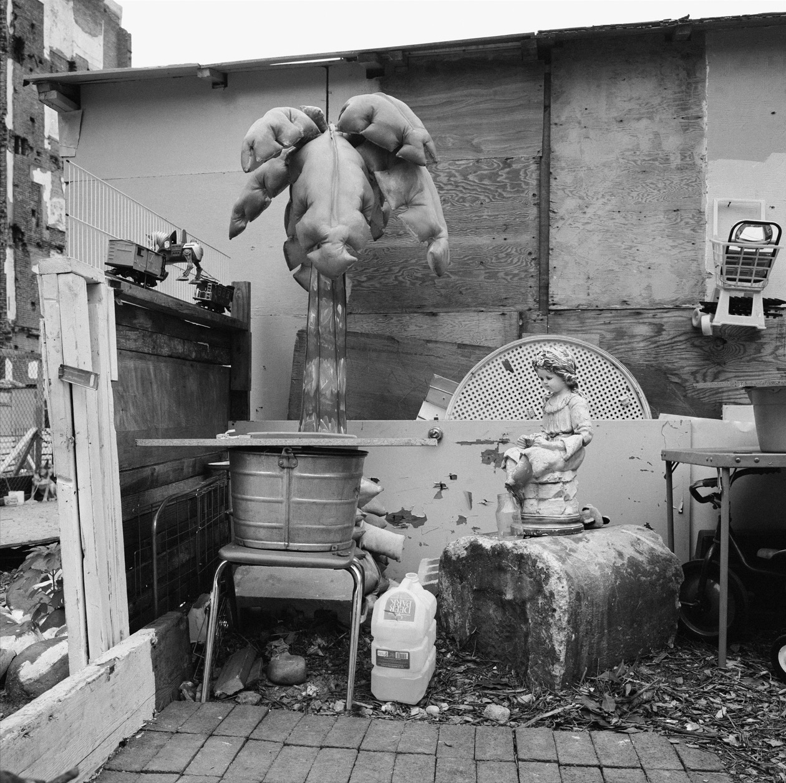
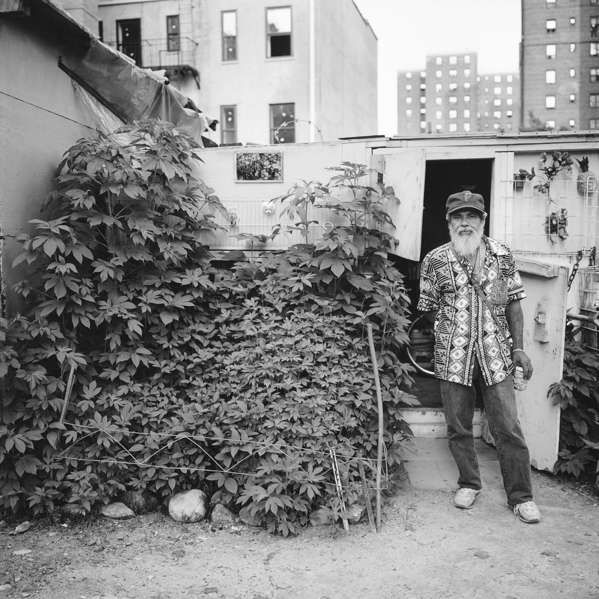
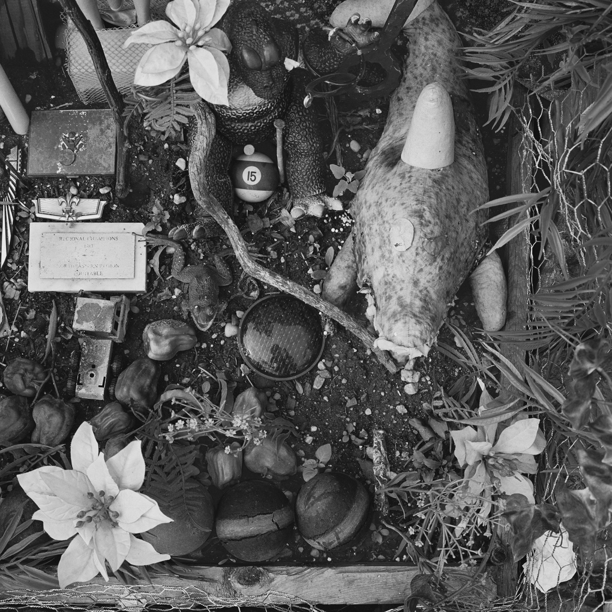
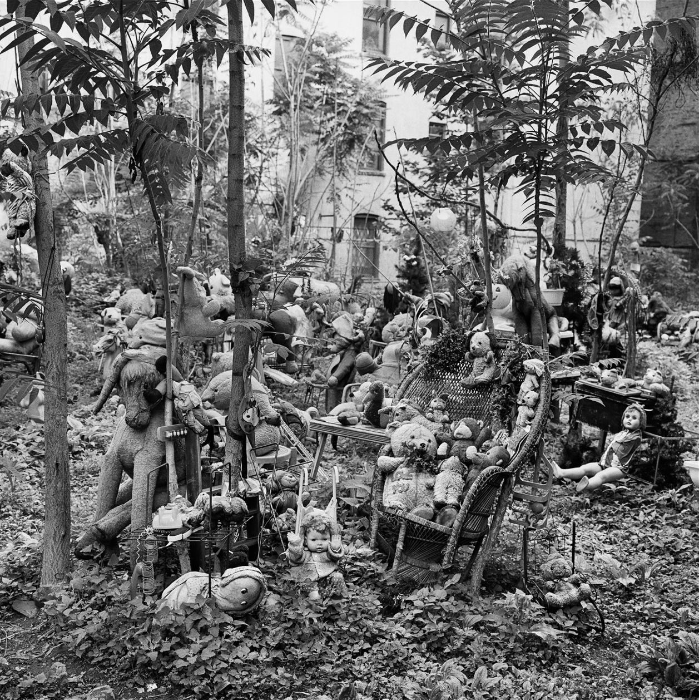

With text by Morton's Yale colleague, landscape architect Diana Balmori, Transitory Gardens, Uprooted Lives attends to gardens built by New York City unhoused people. The gardeners in this book circumvent the law to appropriate public space on empty lots and behind squatted buildings, evading the more rigid order of city-sanctioned community gardens. Spanning a wide swath of the Lower East Side, the images within consider how each space might reflect its caretaker's desire for basic comforts






